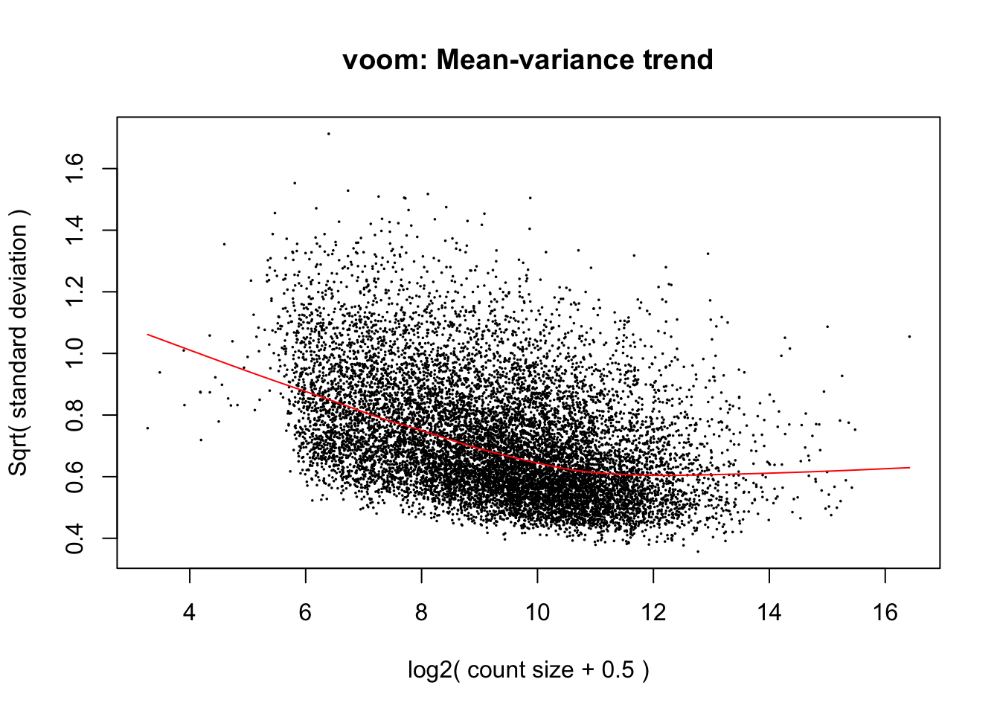
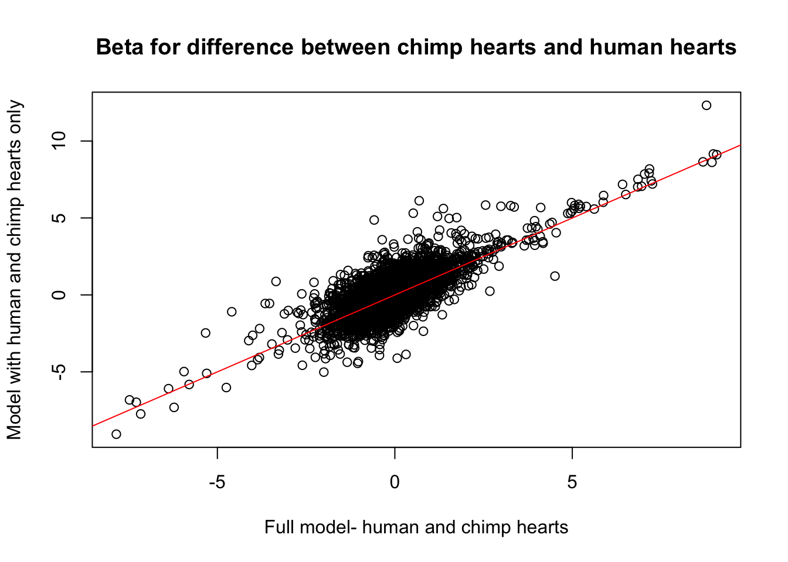
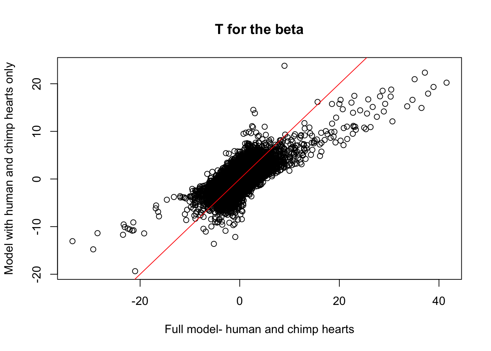
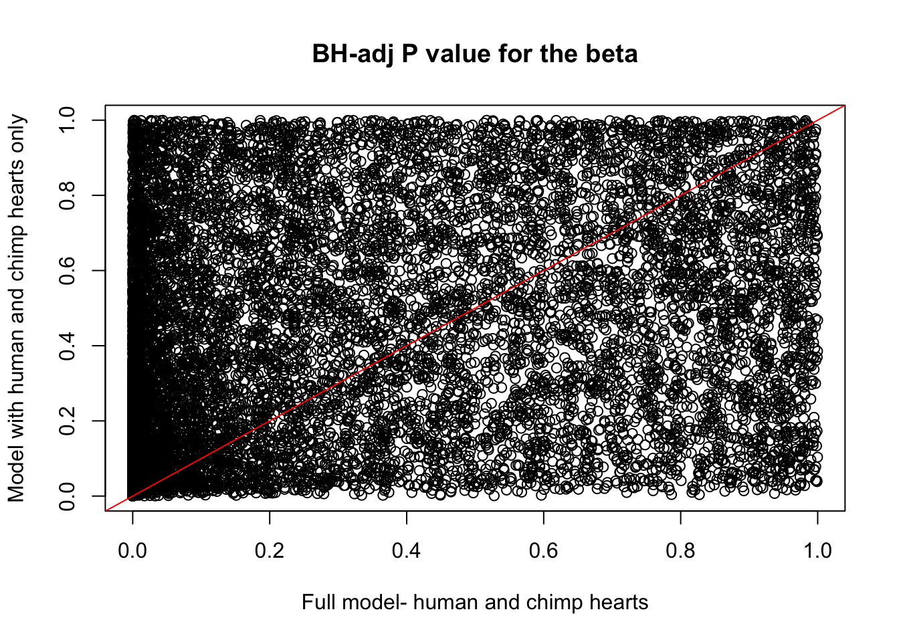

Integration_methyl_exp_human_chimp_only
Lauren Blake
October 4, 2017
In this script, we will perform a joint analysis of methylation and gene expression levels in humans and chimpanzees only. We chose only these two species because the number of genes that we had methylation values for around the promoter was quite low when we required orthology between humans, chimps, and rhesus.
Load data
# Load library
library("lme4")Warning: package 'lme4' was built under R version 3.2.5Loading required package: MatrixWarning: package 'Matrix' was built under R version 3.2.5library("edgeR")Warning: package 'edgeR' was built under R version 3.2.4Loading required package: limmaWarning: package 'limma' was built under R version 3.2.4library("limma")
library("dplyr")Warning: package 'dplyr' was built under R version 3.2.5
Attaching package: 'dplyr'The following objects are masked from 'package:stats':
filter, lagThe following objects are masked from 'package:base':
intersect, setdiff, setequal, unionlibrary("plyr")Warning: package 'plyr' was built under R version 3.2.5-------------------------------------------------------------------------You have loaded plyr after dplyr - this is likely to cause problems.
If you need functions from both plyr and dplyr, please load plyr first, then dplyr:
library(plyr); library(dplyr)-------------------------------------------------------------------------
Attaching package: 'plyr'The following objects are masked from 'package:dplyr':
arrange, count, desc, failwith, id, mutate, rename, summarise,
summarize# Load average methylation data
methyl_values <- read.csv("../data/chimp_human_orth_7725_avg_methyl_per_ts_gene.txt", sep="", stringsAsFactors=FALSE)
# Note: we eliminated H1H in the expression data, so we are going to do this with the methylation data for this analysis
methyl_values_for_exp_no_H1H <- methyl_values[,-17]
# Load sample data
samples <- read.delim("../data/Sample_info_RNAseq_limma.txt")
# Eliminate H1H
samples <- samples[-17,]
dim(samples)[1] 47 4# Make labels
labels <- paste(samples$Species, samples$Tissue, sep=" ")
## Make the contrast matrix
species <- samples$Species
tissue <- samples$Tissue
# Retrieve RIN score for each sample
RNA_seq_info <- read.csv("../data/RNA_seq_info.csv")
RIN <- as.data.frame(RNA_seq_info[,22])
RIN <- as.matrix(RIN)
colnames(RIN) <- c("RIN")
# Sample info needed
#new_sample_info <- cbind(samples[1:31,], RIN[1:31,])
#new_sample_info[,1] <- as.character(new_sample_info[,1])
#new_sample_info[,2] <- as.character(new_sample_info[,2])
#new_sample_info[,3] <- as.character(new_sample_info[,3])
#new_sample_info[,4] <- as.character(new_sample_info[,4])
#write.table(new_sample_info, "../data/human_chimp_orth_new_sample_info.txt", quote = F)
## Make the contrast matrix and rename columns of the contrast matrix
design <- model.matrix(~ species + tissue + RIN)
# Load expression data
# Load count data
counts_genes_in_cutoff <- read.delim("../data/counts_12184.txt")
# TMM
dge_in_cutoff <- DGEList(counts=as.matrix(counts_genes_in_cutoff), genes=rownames(counts_genes_in_cutoff), group = as.character(t(labels)))
dge_in_cutoff <- calcNormFactors(dge_in_cutoff)
cpm_in_cutoff <- cpm(dge_in_cutoff, normalized.lib.sizes=TRUE, log=TRUE)
head(cpm_in_cutoff) C1H C1K C1Li C1Lu C2H C2K
ENSG00000000003 4.569101 6.484481 8.260731 5.481561 4.686636 6.076562
ENSG00000000419 5.842023 5.217972 5.937465 5.478545 5.681016 5.100404
ENSG00000000457 4.560130 5.214732 5.902494 4.972557 4.834031 5.289413
ENSG00000000460 1.506846 1.869887 2.080244 2.308985 1.660573 1.968249
ENSG00000000938 5.611783 3.819613 5.091152 7.550720 2.533135 4.178135
ENSG00000000971 6.877100 4.451824 11.368082 6.100181 6.135730 4.887383
C2Li C2Lu C3H C3K C3Li C3Lu
ENSG00000000003 8.029471 4.564496 4.915377 6.406310 7.784365 5.875983
ENSG00000000419 5.813444 5.199855 5.675979 5.179418 6.413682 5.596709
ENSG00000000457 6.545270 4.985922 4.618657 5.204247 6.498053 5.168988
ENSG00000000460 2.324903 2.023533 1.580465 1.461635 2.344190 2.124699
ENSG00000000938 5.388459 8.083442 4.965147 4.223500 5.204433 7.160345
ENSG00000000971 11.387090 6.246512 5.606820 4.941061 11.420166 5.990777
C4H C4K C4Li C4Lu H1K H1Li
ENSG00000000003 4.235754 6.503717 8.453727 5.430223 6.864660 6.576082
ENSG00000000419 5.785414 5.257938 5.881536 5.321782 5.588152 6.082997
ENSG00000000457 4.645293 5.023223 6.597499 5.263806 4.285007 4.953825
ENSG00000000460 1.456629 1.826787 2.206829 2.476664 2.766766 4.989335
ENSG00000000938 3.638952 3.621239 4.580376 7.717763 4.059344 4.479943
ENSG00000000971 6.845219 5.957838 11.330910 6.421417 6.585546 11.216641
H1Lu H2H H2K H2Li H2Lu H3H
ENSG00000000003 5.099004 3.681088 7.205567 6.638944 4.181104 3.54360583
ENSG00000000419 5.810855 5.606326 5.461678 5.838444 5.313450 5.75090978
ENSG00000000457 4.502116 3.406682 4.158467 4.450840 4.201852 4.44063190
ENSG00000000460 3.318021 1.892216 1.978501 2.657920 2.553081 -0.07576077
ENSG00000000938 7.878166 5.560041 3.740312 5.990299 6.968892 4.09684184
ENSG00000000971 7.561408 6.363288 4.736443 9.409472 7.310814 6.22507411
H3K H3Li H3Lu H4H H4K H4Li
ENSG00000000003 7.091569 7.735945 5.290097 4.284175 6.371782 6.590115
ENSG00000000419 5.854940 6.216818 5.009845 6.244527 5.608088 5.834153
ENSG00000000457 4.722790 4.993719 3.999170 3.312369 4.087480 5.176119
ENSG00000000460 2.990603 3.237751 2.457261 1.629959 1.983141 3.137731
ENSG00000000938 2.643134 5.741066 6.912746 4.918491 3.820852 6.899117
ENSG00000000971 5.313255 10.346500 7.124250 6.927089 6.032612 10.197598
H4Lu R1H R1K R1Li R1Lu R2H
ENSG00000000003 4.463456 4.356369 6.932932 8.3343252 5.915547 4.625348
ENSG00000000419 5.350423 5.464082 5.391834 5.8259430 4.887057 5.295517
ENSG00000000457 4.173647 4.285211 5.024853 5.1435415 4.837373 4.311664
ENSG00000000460 2.604439 1.284359 1.555258 -0.1735364 2.480549 1.415808
ENSG00000000938 8.249002 1.837210 2.564210 3.8041639 6.515323 2.327061
ENSG00000000971 8.277236 4.027912 6.576019 12.1322643 7.445976 5.571685
R2K R2Li R2Lu R3H R3K R3Li
ENSG00000000003 7.134183 8.640291 5.654663 4.469039 7.166047 8.202424
ENSG00000000419 5.043831 5.723120 4.881450 5.462958 5.367362 5.990303
ENSG00000000457 5.154832 5.511121 5.265617 4.241449 5.139792 5.359535
ENSG00000000460 1.320003 1.496941 2.394895 1.656614 1.874414 1.413727
ENSG00000000938 2.681748 3.672247 6.583375 2.870792 2.267214 3.636318
ENSG00000000971 6.778700 11.778253 7.231996 5.150488 6.054215 12.087241
R3Lu R4H R4K R4Li R4Lu
ENSG00000000003 5.453490 4.892515 7.094406 7.705335 5.361237
ENSG00000000419 4.956114 5.427374 5.215706 5.464168 5.041757
ENSG00000000457 5.165431 4.509684 5.144266 5.318210 4.828352
ENSG00000000460 2.577251 1.088179 1.509418 1.534185 2.847559
ENSG00000000938 6.845883 2.474777 2.310571 4.509304 6.834845
ENSG00000000971 7.258258 6.408881 6.469038 11.695479 7.298202hist(cpm_in_cutoff, xlab = "Log2(CPM)", main = "Log2(CPM) values for genes meeting the filtering criteria", breaks = 100 )
# Voom with individual as a random variable
cpm.voom.cyclic <- voom(dge_in_cutoff, design, normalize.method="cyclicloess", plot=T)
corfit <- duplicateCorrelation(cpm.voom.cyclic, design, block=samples$Individual)
corfit.consensus <- 0.06659086
# Final voom on filtered data
cpm.voom.cyclic <- voom(dge_in_cutoff, design, normalize.method="cyclicloess", plot=TRUE, block=samples$Individual, correlation=corfit.consensus)
fit1 <- lmFit(cpm.voom.cyclic, design, block=samples$Individual, correlation=corfit$consensus)
fit1 <- eBayes(fit1)
HvC_full_model <- topTable(fit1, coef=2, adjust="BH", number=Inf, sort.by="none")
summary(HvC_full_model$logFC) Min. 1st Qu. Median Mean 3rd Qu. Max.
-7.84700 -0.34190 -0.04453 -0.02547 0.25770 9.06900 # Get the expression values for the genes that we have average methylation data
methyl_genes_in_exp <- rownames(cpm.voom.cyclic$E) %in% methyl_values_for_exp_no_H1H$X
methyl_genes_in_exp <- as.data.frame(methyl_genes_in_exp)
summary(methyl_genes_in_exp ) methyl_genes_in_exp
Mode :logical
FALSE:4459
TRUE :7725
NA's :0 counts_genes_in <- cbind(cpm.voom.cyclic$E, methyl_genes_in_exp)
counts_genes_in_cutoff <- subset(counts_genes_in, methyl_genes_in_exp == "TRUE")
exp_levels_3776 <- counts_genes_in_cutoff[,1:47]
# Make ensg names the last column
exp_levels_3776[,48] <- rownames(exp_levels_3776)
# Merge expression and methylation
exp_methyl <- merge(exp_levels_3776, methyl_values_for_exp_no_H1H, by.x = "V48", by.y = "X")
rownames(exp_methyl) <- exp_methyl$V48
dim(exp_methyl)[1] 7725 79#write.table(exp_methyl, "../human_chimp_orth_exp_methyl_7725_hum.txt", quote = F)
# Separate expression and methylation
expression_values_only <- exp_methyl[,2:32]
methylation_values_only <- exp_methyl[,49:79]# Select data- human versus chimp heart
limma.ash <- readRDS("../data/results-limma-voom-ash.rds", refhook = NULL)
human_chimp_heart <- limma.ash$HvC_Heart
summary(human_chimp_heart$adj.P.Val < 0.01) Mode FALSE TRUE NA's
logical 9736 2448 0 Human v Chimp Heart
Obtain human and chimp heart data
## Obtain human and chimp heart data
chimp_human_heart <- c(1, 5, 9, 13, 20, 24, 28)
# First, pick out the genes that are DE (you run the entire analysis only on genes that are DE)
## Prepare to make the linear model
species_no_rhesus <- species[chimp_human_heart]
species_no_rhesus <- droplevels.factor(species_no_rhesus, "Rhesus")
# Make the design matrix
design <- model.matrix(~ as.factor(species_no_rhesus) + RIN[chimp_human_heart,])
#write.table(cpm.voom.cyclic, "../data/human_chimp_orth_cpm_voom_cyclic.txt")
fit_all <- lmFit(cpm.voom.cyclic[,chimp_human_heart], design)
fit_all <- eBayes(fit_all)
HvC_Heart_fit_all = topTable(fit_all, coef=2, adjust="BH", number=Inf, sort.by="none")
summary(HvC_Heart_fit_all$logFC) Min. 1st Qu. Median Mean 3rd Qu. Max.
-9.05100 -0.50070 -0.01698 0.01301 0.48930 12.32000 summary(HvC_Heart_fit_all$adj.P.Val < .01) Mode FALSE TRUE NA's
logical 11967 217 0 summary(HvC_Heart_fit_all$adj.P.Val < .05) Mode FALSE TRUE NA's
logical 10837 1347 0 summary(HvC_Heart_fit_all$adj.P.Val < .1) Mode FALSE TRUE NA's
logical 9728 2456 0 summary(HvC_full_model$logFC - HvC_Heart_fit_all$logFC) Min. 1st Qu. Median Mean 3rd Qu. Max.
-5.45200 -0.35110 -0.02344 -0.03848 0.30480 4.18100 plot(HvC_full_model$logFC, HvC_Heart_fit_all$logFC, xlab = "Full model- human and chimp hearts", ylab = "Model with human and chimp hearts only", main = "Beta for difference between chimp hearts and human hearts")
abline(a = 0, b = 1, col = "red")
plot(HvC_full_model$t, HvC_Heart_fit_all$t, xlab = "Full model- human and chimp hearts", ylab = "Model with human and chimp hearts only", main = "T for the beta")
abline(a = 0, b = 1, col = "red")
plot(HvC_full_model$adj.P.Val, HvC_Heart_fit_all$adj.P.Val, xlab = "Full model- human and chimp hearts", ylab = "Model with human and chimp hearts only", main = "BH-adj P value for the beta")
abline(a = 0, b = 1, col = "red")
# Genes DE at FDR 5% and we have methyl data for it
HvC_Heart_fit_all_5perc <- HvC_Heart_fit_all[which(HvC_Heart_fit_all$adj.P.Val < 0.05), ]
human_chimp_heart <- rownames(exp_methyl) %in% HvC_Heart_fit_all_5perc$genes
human_chimp_heart <- as.data.frame(human_chimp_heart)
counts_genes_in <- cbind(exp_methyl, human_chimp_heart)
counts_genes_in_cutoff <- subset(counts_genes_in, human_chimp_heart == "TRUE")
counts_genes_in_cutoff <- counts_genes_in_cutoff[,1:79]
expression_values_only <- counts_genes_in_cutoff[,2:32]
methylation_values_only <- counts_genes_in_cutoff[,49:79]
## Obtain corrected data (regression for scenario 2)
# Make an array to hold the residuals
resid_methyl <- array(0, dim = c(nrow(expression_values_only), 7))
# Regress out RIN on a gene-by-gene basis
expression_values <- as.data.frame(expression_values_only)
methylation_values <- as.data.frame(methylation_values_only)
for (i in 1:nrow(expression_values_only)){
resid_methyl[i,] <- lm(t(expression_values_only[i,chimp_human_heart]) ~ t(methylation_values_only[i,chimp_human_heart]))$resid
}
rownames(resid_methyl) <- rownames(expression_values_only)
# Scenario 1
fit1 <- lmFit(expression_values_only[, chimp_human_heart], design)
fit1 <- eBayes(fit1)
HvC_Heart_fit1 = topTable(fit1, coef=2, adjust="BH", number=Inf, sort.by="none")
# Scenario 2
fit2 <- lmFit(resid_methyl, design)
fit2 <- eBayes(fit2)
HvC_Heart_fit2 = topTable(fit2, coef=2, adjust="BH", number=Inf, sort.by="none")
# Bind DE from fit1 and DE from fit2 together
HvC_Heart_fits12 <- as.data.frame(cbind(rownames(HvC_Heart_fit1), HvC_Heart_fit1$adj.P.Val, HvC_Heart_fit2$adj.P.Val), stringsAsFactors = FALSE)
HvC_Heart_fits12[,2] <- as.numeric(HvC_Heart_fits12[,2])
HvC_Heart_fits12[,3] <- as.numeric(HvC_Heart_fits12[,3])
colnames(HvC_Heart_fits12) <- c("genes", "fit1_FDR", "fit2_FDR")
# Set FDR level
FDR_level <- 0.05
DE_both <- HvC_Heart_fits12[which(HvC_Heart_fits12$fit1_FDR < FDR_level & HvC_Heart_fits12$fit2_FDR < FDR_level),]
nrow(DE_both)[1] 526DE_before <- HvC_Heart_fits12[which(HvC_Heart_fits12$fit1_FDR < FDR_level & HvC_Heart_fits12$fit2_FDR > FDR_level),]
nrow(DE_before)[1] 315DE_after <- HvC_Heart_fits12[which(HvC_Heart_fits12$fit1_FDR > FDR_level & HvC_Heart_fits12$fit2_FDR < FDR_level),]
nrow(DE_after)[1] 0### Permute the methylation values, then re-run (normally would permute 1000 times, but in this example, we will only permute 10 times)
run1000 <- array(0, dim = c(3, 1000))
# for (k in 1:1000){
for (k in 1:10){
# Run 1 for all genes
run1 <- array(0, dim = c(nrow(expression_values_only), 7))
for (i in 1:nrow(expression_values_only)){
df <- as.data.frame(methylation_values_only[i,chimp_human_heart])
new_df <- as.data.frame(sample(df))
run1[i,] <- t(new_df)
}
# Make an array to hold the residuals
resid_methyl_perm <- array(0, dim = c(nrow(expression_values_only), 7))
#for (i in 1:2){
for (i in 1:nrow(expression_values_only)){
resid_methyl_perm[i,] <- lm(t(expression_values_only[i,chimp_human_heart]) ~ run1[i,])$resid
}
rownames(resid_methyl_perm) <- rownames(expression_values_only)
# Scenario 2
fit2 <- lmFit(resid_methyl_perm, design)
fit2 <- eBayes(fit2)
HvC_Heart_perm = topTable(fit2, coef=2, adjust="BH", number=Inf, sort.by="none")
HvCHeart_DE_perm <- cbind(HvC_Heart_fits12$fit1_FDR, HvC_Heart_perm$adj.P.Val)
DE_total <- as.data.frame(HvCHeart_DE_perm[which(HvCHeart_DE_perm[,1] < FDR_level & HvCHeart_DE_perm[,2] < FDR_level),])
DE_total_report <- nrow(DE_total)
DE_before <- as.data.frame(HvCHeart_DE_perm[which(HvCHeart_DE_perm[,1] < FDR_level & HvCHeart_DE_perm[,2] > FDR_level),])
DE_before_report <- nrow(DE_before)
DE_after <- as.data.frame(HvCHeart_DE_perm[which(HvCHeart_DE_perm[,1] > FDR_level & HvCHeart_DE_perm[,2] < FDR_level),])
DE_after_report <- nrow(DE_after)
new_numbers <- rbind(DE_total_report, DE_before_report, DE_after_report)
run1000[,k] <- new_numbers
}
median(run1000[1,1:10])[1] 691median(run1000[2,1:10])[1] 150median(run1000[3,1:10])[1] 0